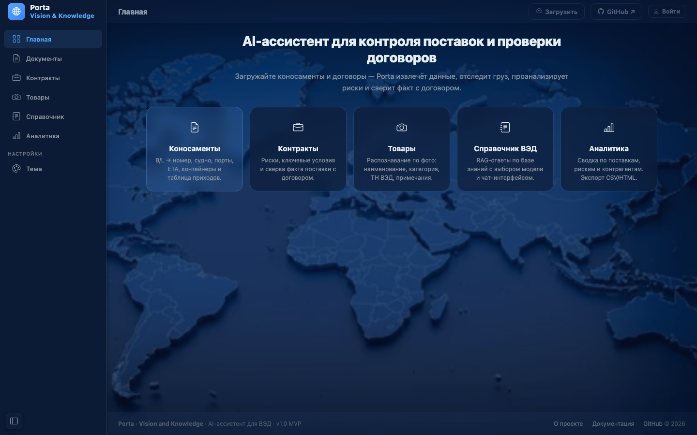
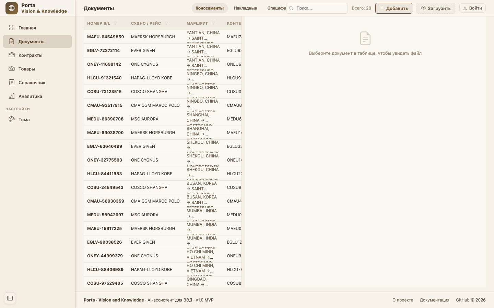
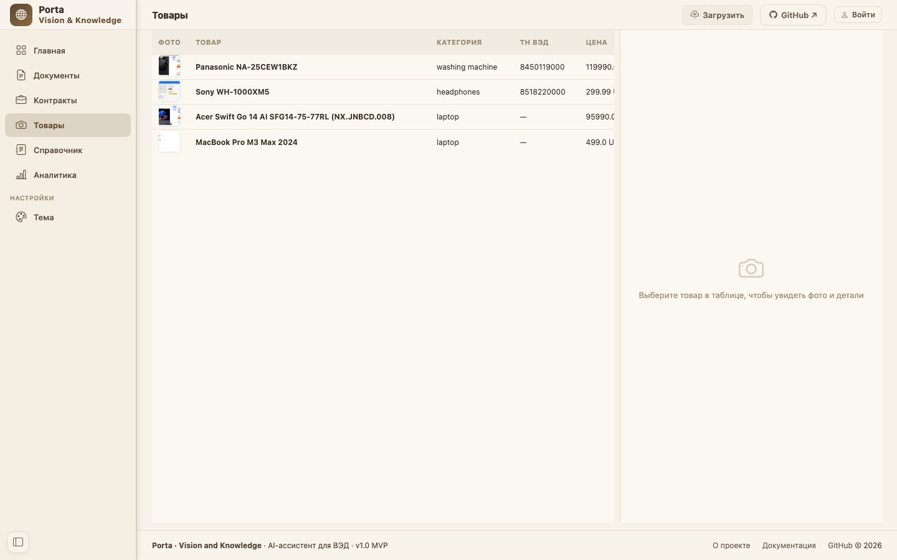
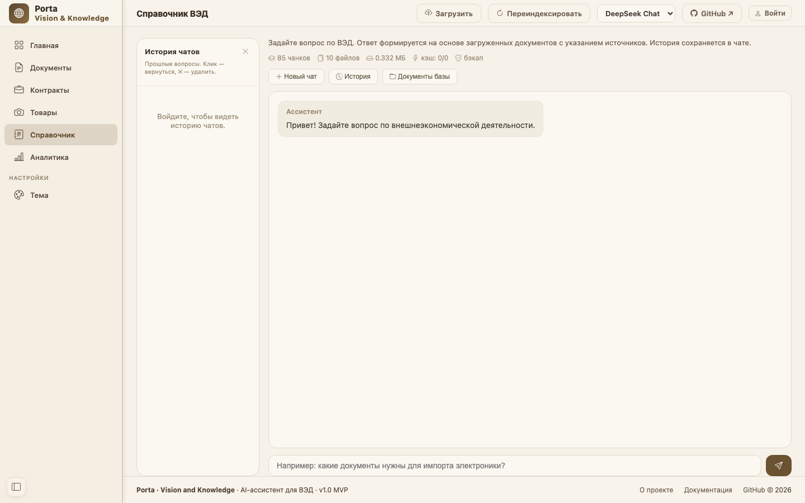
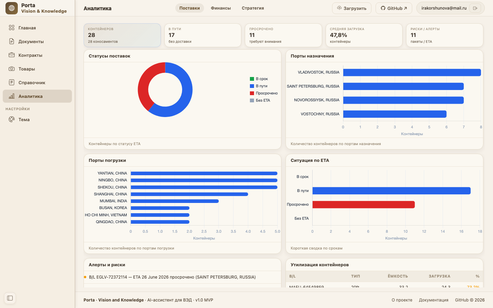

Кейс 01
веб-платформа
Porta — AI-платформа для импортёров
- Задача
- Обработка поставки — коносаментов, инвойсов и договоров — занимала часы ручной работы: нужно было распознать скан, сверить данные с контрактом и свести цифры.
- Решение
- Извлечение данных из сканов своим OCR-парсером, распознавание товаров по фото, сверка поставки с договором и аналитика поставок.
PythonFlaskOCR-парсерVision-моделиLLM APIPostgreSQL
Результат
Часы ручной работы → минуты

Главный экран · тёмная тема

База знаний · Документы

Товары · распознавание по фото

RAG-ассистент по ВЭД

Аналитика поставок